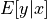
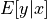
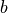
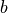
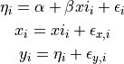

8. Supervised Learning: Regression¶
8.1. Lets use simulated data for the examples below¶
First we will model the distance of 100 supernovas (for a particular cosmology as a function of redshift.
We rely on that astroML has a common API with scikit-learn, extending the functionality of the latter.
import numpy as np
from astropy.cosmology import LambdaCDM
from astroML.datasets import generate_mu_z
z_sample, mu_sample, dmu = generate_mu_z(100, random_state=0)
cosmo = LambdaCDM(H0=70, Om0=0.30, Ode0=0.70, Tcmb0=0)
z = np.linspace(0.01, 2, 1000)
mu_true = cosmo.distmod(z)
8.2. Simple linear regression¶
Regression defined as the relation between a dependent variable,  ,
and a set of independent variables,
,
and a set of independent variables,  , that describes the expectation
value of y given x: .
, that describes the expectation
value of y given x: .
We will start with the most familiar linear regression, a straight-line fit
to data. A straight-line fit is a model of the form  where
where
 is commonly known as the slope, and  is commonly known as
the intercept.
is commonly known as the slope, and  is commonly known as
the intercept.
We can use Scikit-Learn’s LinearRegression estimator to fit this data and construct the best-fit line:
from sklearn.linear_model import LinearRegression as LinearRegression_sk
linear_sk = LinearRegression_sk()
linear_sk.fit(z_sample[:,None], mu_sample)
mu_fit_sk = linear_sk.predict(z[:, None])
(Source code, png, hires.png, pdf)
{kind=link}
{kind=link}
8.3. Measurement Errors in Linear Regression¶
Modifications to LinearRegression in astroML take measurement errors into account on the dependent variable. The API is the same as for the Scikit-Learn version above:
from astroML.linear_model import LinearRegression
linear = LinearRegression()
linear.fit(z_sample[:,None], mu_sample, dmu)
mu_fit = linear.predict(z[:, None])
(Source code, png, hires.png, pdf)
{kind=link}
{kind=link}
8.4. Measurement errors in both dependent and independent variables¶
Use simulation data from Kelly 2007 where
there is measurement error on the observed values  and
and
 as well as intrinsic scatter in the regression relationship:
as well as intrinsic scatter in the regression relationship:

from astroML.datasets import simulation_kelly
simulated_values = simulation_kelly(size=100, scalex=0.2, scaley=0.2,
alpha=2, beta=1)
ksi, eta, xi, yi, xi_error, yi_error, alpha_in, beta_in = simulated_values
Now we take into account errors both on the dependent and independent
variables. The functionality is provided in the new class, LinearRegressionwithErrors:
from astroML.linear_model import LinearRegressionwithErrors
linreg_xy_err = LinearRegressionwithErrors()
linreg_xy_err.fit(xi, yi, yi_error, xi_error)
Now plot the regression: